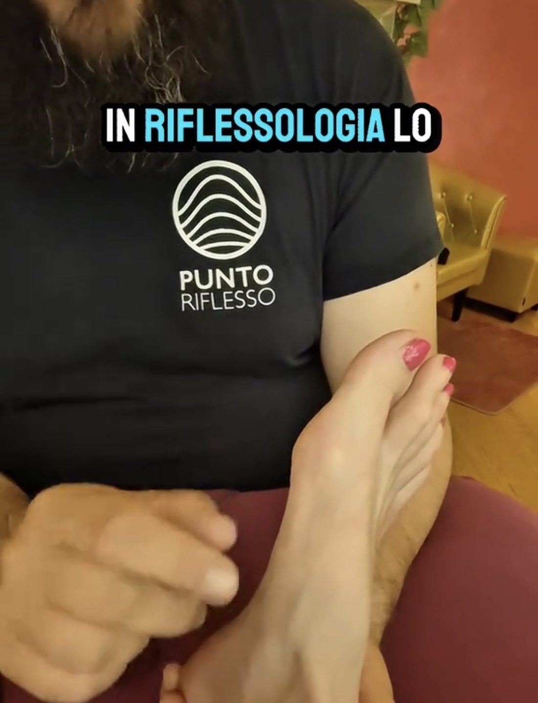
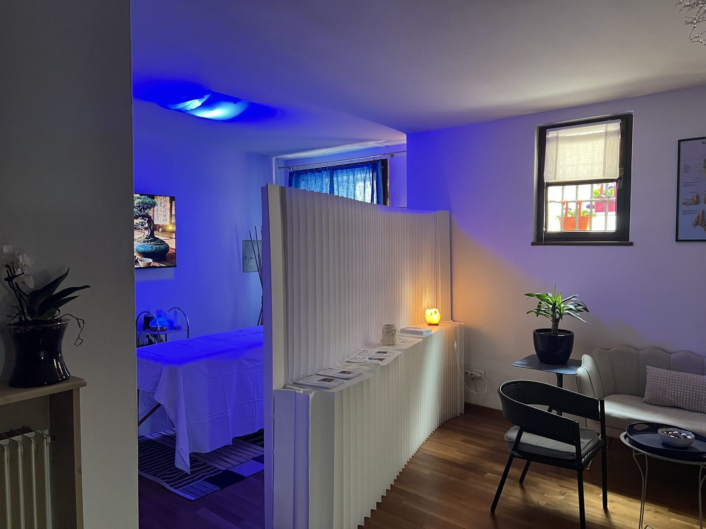
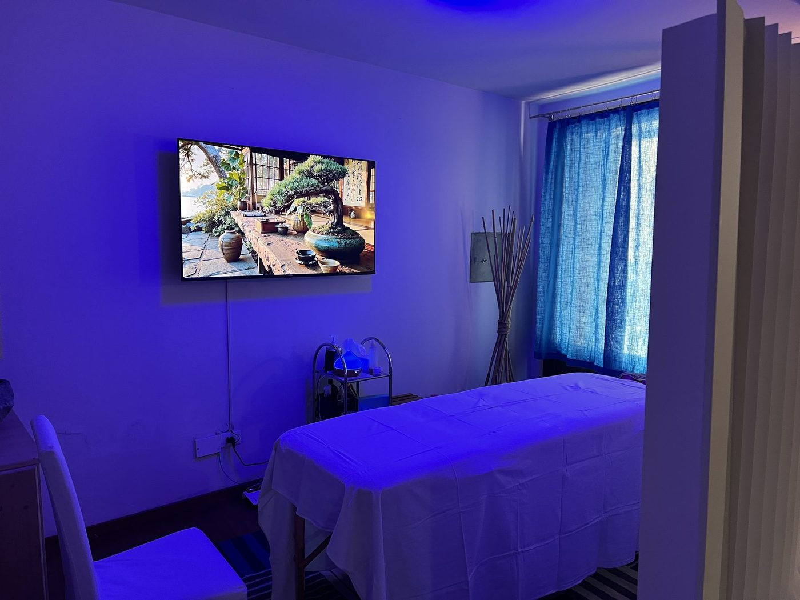

— Ultimo articolo
…
…caricamento articolo in evidenza…
…
Leggi l'articolo
Sono Cristian Bresadola. Accompagno le persone nella ricerca del proprio equilibrio psicofisico attraverso naturopatia, riflessologia, Medicina Tradizionale Cinese, floriterapia, fitoterapia e lettura della Croce Maya.

Naturopatia, riflessologia, massaggio olistico, floriterapia, fitoterapia, Croce Maya. Ogni disciplina è un angolo di osservazione differente. Insieme compongono una mappa più precisa.

Un percorso di riequilibrio che considera la persona nella sua interezza — corpo, emozioni, stile di vita, ambiente.
Scopri di più
Il piede come mappa. Lavoro su zone riflesse nella tradizione della Medicina Tradizionale Cinese e dei cinque elementi.
Scopri di più
Non manovre standard: un incontro in cui il tocco si adatta a ciò di cui hai bisogno in quel momento.
Scopri di più
I 38 Fiori di Bach. Una miscela personalizzata composta dopo l'ascolto del tuo momento e delle dinamiche che ti porti dietro.
Scopri di più
Le piante officinali a sostegno del benessere. Tisane, macerati, gemmoderivati, tinture madri, oli essenziali.
Scopri di più
Uno strumento di auto-conoscenza strutturata basato sul Tzolk'in. Non divinatorio. Pagina dedicata.
ApprofondisciLe consulenze e i trattamenti offerti hanno carattere complementare e non sostituiscono il parere del medico. In presenza di patologie, terapie farmacologiche in corso, gravidanza o condizioni particolari, consulta sempre il tuo medico curante.
Nel solco della tradizione Kneipp, Priessnitz, Lezaeta.
Non un altro trattamento a sé, ma una delle pratiche più antiche e potenti della naturopatia europea. In studio lavoro con impacchi, fanghi, argille e terra vergine. Per i getti, i vapori e i percorsi termali ti accompagno in strutture convenzionate.
Scopri il percorso completoNel tempo ho sviluppato un approccio che integra riflessologia plantare, massaggio Breuss, Medicina Tradizionale Cinese e discipline olistiche in un lavoro coerente sulla persona.
Lo applico in studio. Lo insegno nei corsi di Punto Riflesso.
Uno strumento di auto-conoscenza strutturata.
Non un oroscopo. Non una previsione. Non una diagnosi.
Uno specchio basato su un sistema simbolico mesoamericano di migliaia di anni di sviluppo — il Tzolk'in, ancora oggi in uso nelle comunità K'iche' del Guatemala.
Esempio di copertina
Ogni lettura è unica
Non una semplice interpretazione simbolica, ma un vero viaggio dentro me stessa. Mi sono sentita vista, accolta, accompagnata — senza giudizio.
Un lavoro curato nei dettagli. Non solo uno strumento di auto-conoscenza, ma una vera mappa che aiuta a riconoscere le energie, le inclinazioni, i talenti.
In Cristian grande professionalità e competenza si uniscono a una profonda empatia. Un punto di riferimento attento e premuroso.
Curo regolarmente la rubrica Pillole di benessere sul portale UnserTirol24, in italiano e tedesco. Brevi articoli su disturbi comuni e rimedi naturali, con uno sguardo che integra Medicina Tradizionale Cinese, riflessologia, idroterapia e fitoterapia.
…
Una libreria di rimedi naturali in due lingue, su disturbi comuni e cure dolci. In crescita ogni mese.
Pubblicato regolarmente su UnserTirol24, portale di informazione tirolese (italiano e tedesco).


Vicolo della Contrada Tedesca 9
38121 Trento
Orari: Mercoledì 16:00–21:00 · Altri giorni su richiesta
L'indirizzo preciso viene condiviso al momento della conferma della prenotazione.
Alcune consulenze sono disponibili anche online.
Il primo passo è la scheda guidata: cinque minuti per raccontarmi chi sei e cosa cerchi. Oppure scrivimi su WhatsApp se preferisci parlarne prima.